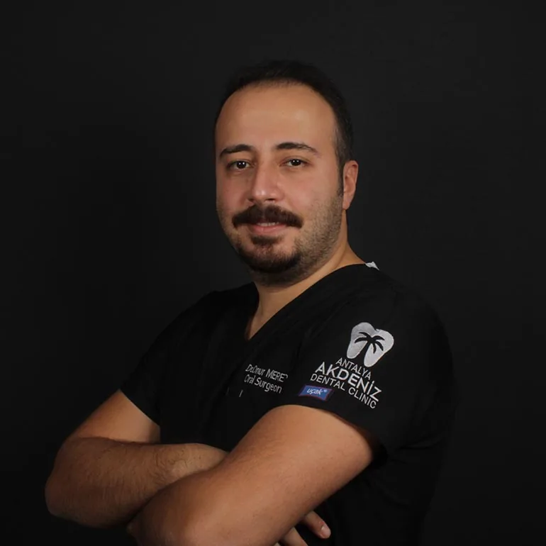

Dr. Mehmet Onur Merey
Chirurg oro-maxilo-facial / Proprietar al clinicii
Date de contact
Clinică
+90 507 785 40 49
E-mail
info@akdenizdental.com
Despre Dr. Mehmet Onur Merey: educație și formare profesională
Născut în 1992 în Antalya, Dr. Mehmet Onur Merey a absolvit Universitatea Marmara (2010–2016) și și-a finalizat specializarea în chirurgie oro-maxilo-facială la Universitatea Akdeniz (2018–2023).
Dr. Mehmet Onur Merey – domenii de expertiză la Akdeniz Dental, Antalya
Este expert în proceduri chirurgicale avansate, inclusiv chirurgia implantară, grefele osoase și extracțiile complexe. Precizia chirurgicală, deciziile luate cu încredere și grija centrată pe pacient îl transformă într-o autoritate de top în chirurgia maxilo-facială.